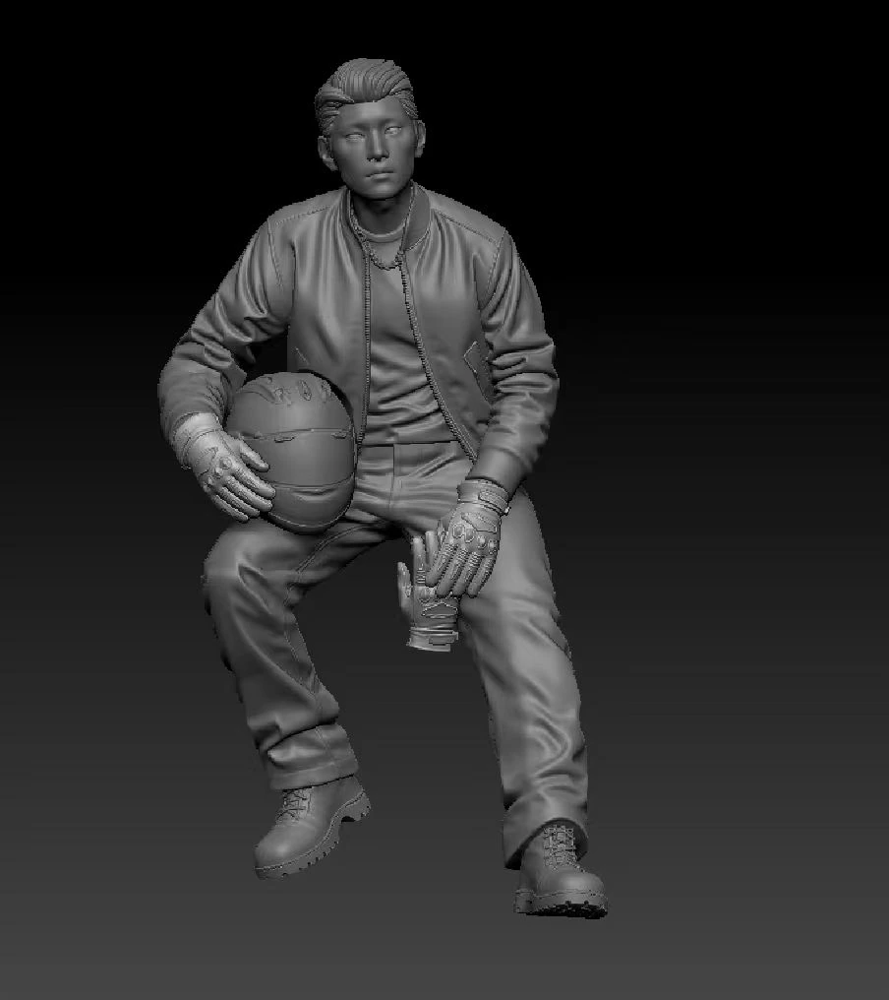
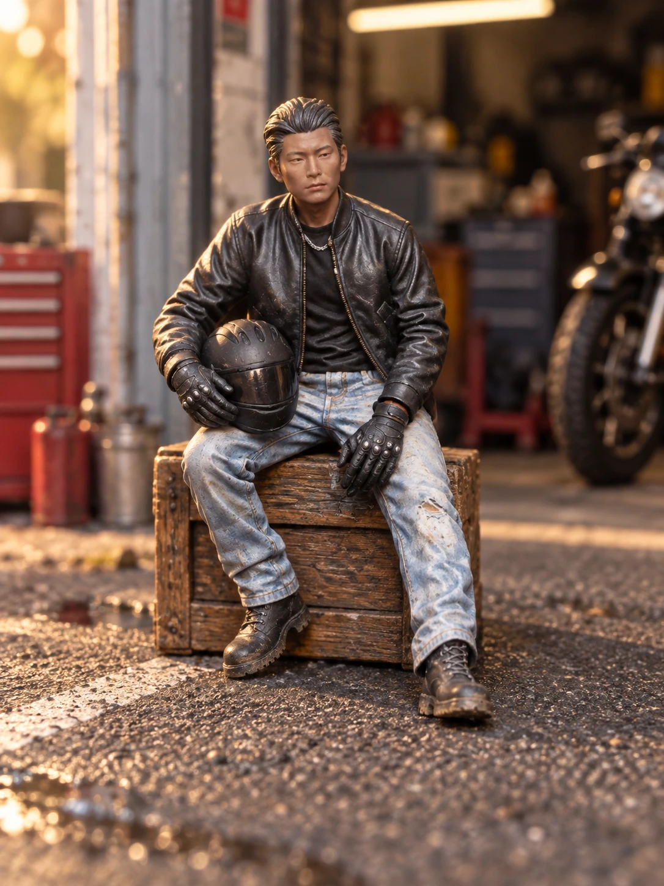

导入白模
选择内置人偶，或导入自己的 GLB 模型。
垂直创作工具 / Web MVP
需求 · 原型 · AI 辅助开发 · 测试
微缩人偶配色与涂装预演
持续内测与体验迭代
微缩涂装的每一次试色，
都发生在有限的表面上。
项目来自「方寸之间」的微缩人偶创作场景。面对配色、纹样位置与材质选择，创作者需要在二维参考和实体白模之间反复想象。
我将这个过程拆解为可操作的产品任务：选中一个部位，调整颜色与表面，再从不同角度检查整体效果。让方案在动手制作之前，就有一个可以讨论和修改的版本。
一条工作流，连接准备、编辑与展示。
选择内置人偶，或导入自己的 GLB 模型。
检查模型与分区，为局部编辑建立基础。
组合纯色、渐变、分色、纹样与表面质感。
保存方案、导出作品，并探索场景展示。

以上为工作室已有参考素材，用于说明创作流程；并非实时 3D 渲染前后对比。
左侧管理人偶与可上色部位，中央观察三维效果，右侧承载当前部位的配色、纹样与质感。操作和反馈保持在同一工作空间。
用纯色、渐变、分色建立第一层选择；将投影方向、位置、尺寸和柔和度放入下一层，让细节控制围绕明确的意图展开。
撤销、重做、原模对照和保存为新方案，支持反复尝试；正面、侧面、背面与特写，帮助检查局部与整体的关系。
模型导入
发型与服装
材质分区
旋转 · 缩放 · 原模对照
当前选中部位上色方式
局部定位
材质调节
工作台信息架构示意

SCENE STUDY / 场景示范素材微缩创作不止于给模型填色。哑光、缎面与金属的差别，阴影与提亮的层次，以及纹样的方向和比例，共同构成一个人偶的性格。
因此，工作台把配色、贴图与笔涂质感组织为三个编辑维度，并以场景示范帮助创作者理解最终呈现。
目前已有可访问的 Web 工作台，组织了人偶选择、GLB 导入、分区配色、纹样与材质编辑、多视角检查、方案保存和导出入口。
将实体涂装中的“看参考—试配色—看整体—再调整”，转化为可逆的数字操作流程；把创作者的实践经验落实为界面结构与交互规则。
持续优化人偶渲染与模型分区，观察首次完成配色的耗时、方案保存使用情况及实体试色的一致性。生成服务仍需结合实际调用验证，暂不将界面入口视作稳定交付结果。
实机体验 · 访问权限沿用原工作室设置